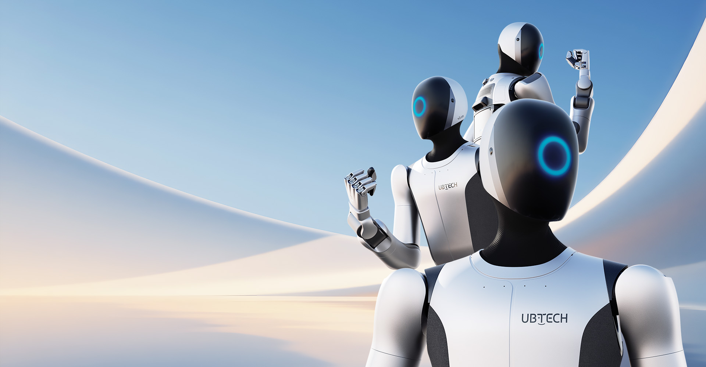

Walker S2工业产品版
优必选 · 双足人形 · 已发布
面向工业搬运的人形机器人。厂商页面称已开启量产交付；本库仅记录其发布，不据此承诺现货或交期。自主换电的全天运行与单次电池续航分开；教育版规格不自动套入工业版。本轮另查工业官网图片内文字规格表，补入其176 cm、70 kg、52 DoF及2 m/s宣称；所有数值仍为厂商资料，重量包含口径与单次续航尚不完整，未借用教育版参数。

完整规格与依据
身体规格
- 身高
- 176 cm 已核对原文 · 厂商资料
工业产品页的“WalkerS2_pages3_70.png”概述图明确身高176 cm；不是从教育手册继承或由人像比例估算。
本项资料核验 2026-10-24 - 整机重量
- 70 kg 已核对原文 · 厂商资料
同一工业官方概述图写体重70 kg；该图未说明是否含电池/灵巧手，不借教育版“不含手”条件补齐本项口径。
本项资料核验 2026-10-24 - 自由度
- 52 DoF 已核对原文 · 厂商资料
同一工业官方概述图写自由度52个；未分主动/被动，不改写为52个主动执行器，也不与教育版三代手42个主动关节混为同配。
本项资料核验 2026-10-24 - 末端执行器
- 第四代灵巧手；单手11自由度、6个阵列触觉压力传感器 已核对原文 · 厂商资料
工业概述图明确第四代手11自由度，单手抓握7.5 kg、指尖1 kg；抓握/指尖能力不当作单臂持续载荷。布局图另明确灵巧手×2。
本项资料核验 2026-10-24
运动与操作
- 操作负载
- 15 kg 已核对原文 · 厂商资料
工业正文明确0–1.8 m作业空间内搬运15 kg；整机搬运口径，不是单臂持续负载，也不与单手抓握7.5 kg互相替换。
本项资料核验 2026-10-24 - 移动速度
- 2 m/s 已核对原文 · 厂商资料
工业概述图写2 m/s高速拟人行走；地面、负载和持续时长未列，非独立实测。
本项资料核验 2026-10-24
电池与工作
- 工作时间
- 待核实
【口径不兼容】工业官网只确认双电池/自主换电约3分钟以支持24/7连续作业，未确认单次电池工况时长；教育版2.5 h不能直接继承，24/7也不是单充续航。
本项资料核验 2026-10-24；相关链接不表示厂商从未披露。 - 电池能量
- 待核实
【本轮未找到】已查工业产品页正文及两张官方规格/布局图未找到电池Wh；双电池切换说明不足以确定单块或组合能量。
本项资料核验 2026-10-24；相关链接不表示厂商从未披露。 - 电池容量
- 待核实
【本轮未找到】已查工业官网正文和规格图未找到电池Ah/mAh及单块/双块组合口径；不采经销商数值充当官方规格。
本项资料核验 2026-10-24；相关链接不表示厂商从未披露。
感知与开发
- 感知配置
- 鱼眼相机×2、双目RGB相机×2、RGBD前后各1、六维力传感器×2；第四代手触觉 已核对原文 · 厂商资料
官网“产品参数”图有明确文本标注（非由外观识别）：鱼眼×2、双目RGB×2、前后RGBD各1、六维力传感器×2。仅报告所列，不宣称为全部传感器；手部触觉细节见同页工业概述图。
本项资料核验 2026-10-24 - 计算平台
- 待核实
【配置归属未明】工业官网介绍Co-Agent和群脑网络，但这些软件/架构名不是板卡SKU；教育手册的x86+Orin不能直接映射工业交付硬件。
本项资料核验 2026-10-24；相关链接不表示厂商从未披露。 - 二次开发
- 待核实
【配置归属未明】工业官网和已查规格图未确认对外二开接口或采购权限；教育版接口文档不自动构成工业配置SDK支持证明。
本项资料核验 2026-10-24；相关链接不表示厂商从未披露。
采购信息
- 美元报价
- 待核实
【报价待采集】官网工业页为产品咨询，未在本轮资料中找到绑定地区/日期/配置的美元整机报价；不采经销商价或媒体估价。
本项资料核验 2026-10-24；相关链接不表示厂商从未披露。 - 人民币报价
- 待核实
【报价待采集】官网工业页为产品咨询，本轮未找到可归属此工业配置的人民币整机报价，不能拿订单总额除台数当裸机价。
本项资料核验 2026-10-24；相关链接不表示厂商从未披露。
同型号的其他配置 / 代际
- Walker S2 教育版（官方手册）优必选 · 双足人形